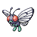

Метапод
Метапод — Покемон 1 поколения под номером 11 в Покедекс. Обитает он в регионе Канто и относится к Жучиному типу. Оболочка, покрывающая тело Метапода, тверда, как железная плита. Этот Покемон не очень сильно двигается. Он остаётся неподвижным, потому что подготавливает свои мягкие внутренности к эволюции внутри твёрдой оболочки.
Тип и слабости:
Жук
Эволюция
# 011 Метапод
=>

# 012 Баттерфри